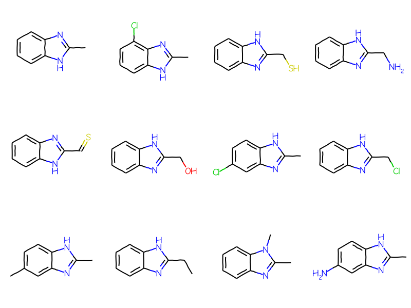
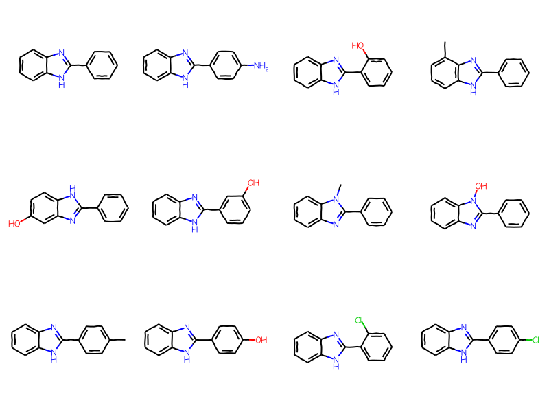
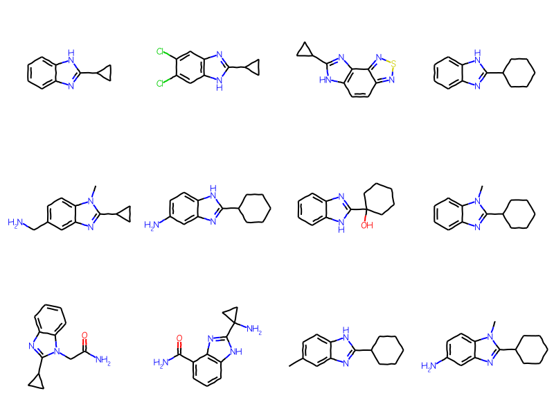
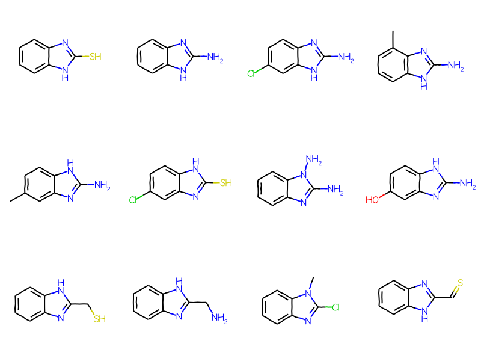
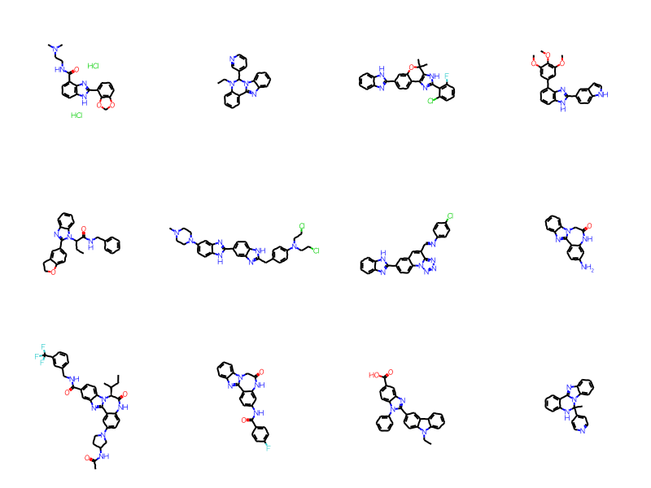
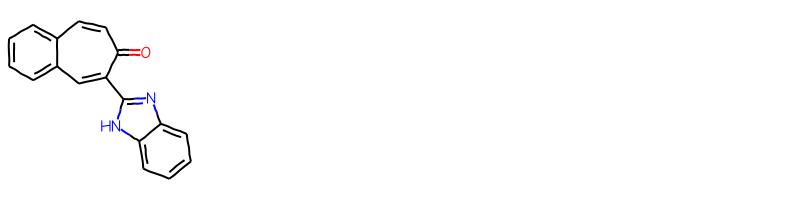

One of the features added for the v2022.03 RDKit release is support for “Reaxys/Beilstein” generic groups - atoms with labels like “ARY” or “ACY” which can be used to make substructure searches more specific.
This post provides a quick overview of that functionality.
Load a SubstructLibrary created using ChEMBL_30. The code used to construct this is below. Note that I’ve configured the SubstructLibrary to return search results sorted by the number of heavy atoms so that I get smaller, more specific results first.
from rdkit import RDLogger
from rdkit import Chem
from rdkit.Chem import rdSubstructLibrary
import pickle, time
import gzip
import numpy as np
gz = gzip.GzipFile('/home/glandrum/Downloads/chembl_30.sdf.gz')
suppl = Chem.ForwardSDMolSupplier(gz)
RDLogger.DisableLog("rdApp.warning")
t1=time.time()
data = []
for i,mol in enumerate(suppl):
if not ((i+1)%50000):
print(f"Processed {i+1} molecules in {(time.time()-t1):.1f} seconds")
if mol is None or mol.GetNumHeavyAtoms()>50:
continue
fp = Chem.PatternFingerprint(mol,fpSize=1024,tautomerFingerprints=True)
smi = Chem.MolToSmiles(mol)
data.append((smi,fp,mol.GetNumHeavyAtoms()))
t2=time.time()
pickle.dump(data,open('./results/chembl30_sssdata.pkl','wb+'))
t1=time.time()
mols = rdSubstructLibrary.CachedTrustedSmilesMolHolder()
fps = rdSubstructLibrary.TautomerPatternHolder(1024)
natoms = []
for smi,fp,nats in data:
mols.AddSmiles(smi)
fps.AddFingerprint(fp)
natoms.append(nats)
library = rdSubstructLibrary.SubstructLibrary(mols,fps)
library.SetSearchOrder([int(x) for x in np.argsort(natoms)])
t2=time.time()
print(f"That took {t2-t1:.2f} seconds. The library has {len(library)} molecules.")
pickle.dump(library,open('./results/chembl30_ssslib.pkl','wb+'))
import picklewithopen('./results/chembl30_ssslib.pkl','rb') as inf: sslib = pickle.load(inf)print(f'SubstructLibrary loaded with {len(sslib)} molecules')
SubstructLibrary loaded with 2035013 molecules
Beilstein generic queries
Start with a simple query molecule which includes a generic atom in an SGroup:
mb =''' Mrv2108 04052206092D 0 0 0 0 0 999 V3000M V30 BEGIN CTABM V30 COUNTS 10 11 1 0 0M V30 BEGIN ATOMM V30 1 C -11.4118 0.5479 0 0M V30 2 C -11.3849 -0.9919 0 0M V30 3 C -10.0379 -1.7385 0 0M V30 4 C -8.7179 -0.9454 0 0M V30 5 C -8.7448 0.5943 0 0M V30 6 C -10.0918 1.341 0 0M V30 7 N -7.2453 -1.3956 0 0M V30 8 C -6.362 -0.1342 0 0M V30 9 N -7.2888 1.0958 0 0M V30 10 C -4.8222 -0.161 0 0M V30 END ATOMM V30 BEGIN BONDM V30 1 1 1 2M V30 2 2 2 3M V30 3 1 3 4M V30 4 2 4 5M V30 5 1 5 6M V30 6 2 1 6M V30 7 1 7 8M V30 8 1 5 9M V30 9 1 4 7M V30 10 2 8 9M V30 11 1 8 10M V30 END BONDM V30 BEGIN SGROUPM V30 1 SUP 0 -M V30 ATOMS=(1 10) -M V30 LABEL="ARY"M V30 END SGROUPM V30 END CTABM END'''bqry = Chem.MolFromMolBlock(mb)# show labels for the Sgroups:for sgs in Chem.GetMolSubstanceGroups(bqry):if sgs.GetProp('TYPE') =='SUP': bqry.GetAtomWithIdx(sgs.GetAtoms()[0]).SetProp("atomLabel",sgs.GetProp("LABEL"))bqry
Initially the generic ARY query is not used in the substructure search:
matches = sslib.GetMatches(bqry)mols = [sslib.GetMol(x) for x in matches]print(f'There are {len(mols)} matches')Draw.MolsToGridImage(mols[:12],molsPerRow=4)
There are 1000 matches

But we can limit the results to aryl substituents by expanding the generic query and telling the SubstructLib to use it:
ary_qry = Chem.Mol(bqry)# expand the query:Chem.SetGenericQueriesFromProperties(ary_qry)# do the search using generic query matchers:params = Chem.SubstructMatchParameters()params.useGenericMatchers =Truematches = sslib.GetMatches(ary_qry,params)mols = [sslib.GetMol(x) for x in matches]print(f'There are {len(mols)} matches')Draw.MolsToGridImage(mols[:12],molsPerRow=4)
There are 1000 matches

The full list of recognized generic atoms is here: https://github.com/rdkit/rdkit/blob/master/Code/GraphMol/GenericGroups/GenericGroups.h#L245 (And, yes, that should be in the documentation… hopefully we can get that in for the next release).
Here are a couple of more examples
AHC: heteroacyclic groups
mb =''' Mrv2108 03242208122D 0 0 0 0 0 999 V3000M V30 BEGIN CTABM V30 COUNTS 10 11 1 0 0M V30 BEGIN ATOMM V30 1 C -11.4118 0.5479 0 0M V30 2 C -11.3849 -0.9919 0 0M V30 3 C -10.0379 -1.7385 0 0M V30 4 C -8.7179 -0.9454 0 0M V30 5 C -8.7448 0.5943 0 0M V30 6 C -10.0918 1.341 0 0M V30 7 N -7.2453 -1.3956 0 0M V30 8 C -6.362 -0.1342 0 0M V30 9 N -7.2888 1.0958 0 0M V30 10 C -4.8222 -0.161 0 0M V30 END ATOMM V30 BEGIN BONDM V30 1 1 1 2M V30 2 2 2 3M V30 3 1 3 4M V30 4 2 4 5M V30 5 1 5 6M V30 6 2 1 6M V30 7 1 7 8M V30 8 1 5 9M V30 9 1 4 7M V30 10 2 8 9M V30 11 1 8 10M V30 END BONDM V30 BEGIN SGROUPM V30 1 SUP 0 ATOMS=(1 10) SAP=(3 10 8 1) XBONDS=(1 11) LABEL=AHCM V30 END SGROUPM V30 END CTABM END'''bqry = Chem.MolFromMolBlock(mb)# show labels for the Sgroups:for sgs in Chem.GetMolSubstanceGroups(bqry):if sgs.GetProp('TYPE') =='SUP': bqry.GetAtomWithIdx(sgs.GetAtoms()[0]).SetProp("atomLabel",sgs.GetProp("LABEL"))ahc_qry = Chem.Mol(bqry)# expand the query:Chem.SetGenericQueriesFromProperties(ahc_qry)# do the search using generic query matchers:params = Chem.SubstructMatchParameters()params.useGenericMatchers =Truematches = sslib.GetMatches(ahc_qry,params)mols = [sslib.GetMol(x) for x in matches]print(f'There are {len(mols)} matches')Draw.MolsToGridImage(mols[:12],molsPerRow=4)
There are 1000 matches
CAL: carbocyclic alkyl
mb =''' Mrv2108 03242208122D 0 0 0 0 0 999 V3000M V30 BEGIN CTABM V30 COUNTS 10 11 1 0 0M V30 BEGIN ATOMM V30 1 C -11.4118 0.5479 0 0M V30 2 C -11.3849 -0.9919 0 0M V30 3 C -10.0379 -1.7385 0 0M V30 4 C -8.7179 -0.9454 0 0M V30 5 C -8.7448 0.5943 0 0M V30 6 C -10.0918 1.341 0 0M V30 7 N -7.2453 -1.3956 0 0M V30 8 C -6.362 -0.1342 0 0M V30 9 N -7.2888 1.0958 0 0M V30 10 C -4.8222 -0.161 0 0M V30 END ATOMM V30 BEGIN BONDM V30 1 1 1 2M V30 2 2 2 3M V30 3 1 3 4M V30 4 2 4 5M V30 5 1 5 6M V30 6 2 1 6M V30 7 1 7 8M V30 8 1 5 9M V30 9 1 4 7M V30 10 2 8 9M V30 11 1 8 10M V30 END BONDM V30 BEGIN SGROUPM V30 1 SUP 0 ATOMS=(1 10) SAP=(3 10 8 1) XBONDS=(1 11) LABEL=CALM V30 END SGROUPM V30 END CTABM END'''bqry = Chem.MolFromMolBlock(mb)cal_qry = Chem.Mol(bqry)# expand the query:Chem.SetGenericQueriesFromProperties(cal_qry)# do the search using generic query matchers:params = Chem.SubstructMatchParameters()params.useGenericMatchers =Truematches = sslib.GetMatches(cal_qry,params)mols = [sslib.GetMol(x) for x in matches]print(f'There are {len(mols)} matches')Draw.MolsToGridImage(mols[:12],molsPerRow=4)
There are 784 matches

Providing the queries in CXSMILES
You can also use CXSMILES/CXSMARTS to provide these queries:
ahc_qry = Chem.Mol(sqry)# expand the query:Chem.SetGenericQueriesFromProperties(ahc_qry)# do the search using generic query matchers:params = Chem.SubstructMatchParameters()params.useGenericMatchers =Truematches = sslib.GetMatches(ahc_qry,params)mols = [sslib.GetMol(x) for x in matches]print(f'There are {len(mols)} matches')Draw.MolsToGridImage(mols[:12],molsPerRow=4)
There are 1000 matches

Though note that if you use CXSMILES it’s important to make sure the dummy atom is replaced with a query before doing the search. If you don’t do so, you’ll get no results since the dummy atom only matches other dummy atoms:
sqry = Chem.MolFromSmiles('*C1=NC2=C(N1)C=CC=C2 |$AHC;;;;;;;;;$|')ahc_qry = Chem.Mol(sqry)# expand the query:Chem.SetGenericQueriesFromProperties(ahc_qry)params = Chem.SubstructMatchParameters()params.useGenericMatchers =Truematches = sslib.GetMatches(ahc_qry,params)print(f'There are {len(matches)} matches')
329 ms ± 6.11 ms per loop (mean ± std. dev. of 7 runs, 1 loop each)
We’d expect the searches using generic groups to take at least a bit longer since they will results in more molecules being scanned until we find our 5000 results. The big question is whether or not merely including the generic queries results in a significant slow down.
Let’s test how much longer it takes using two of the different generic groups:
# Start with "CAL"params = Chem.SubstructMatchParameters()params.useGenericMatchers =True%timeit matches = sslib.GetMatches(cal_qry,params,maxResults=5000)
415 ms ± 18.3 ms per loop (mean ± std. dev. of 7 runs, 1 loop each)
That really doesn’t make much of a difference at all.
1.24 s ± 139 ms per loop (mean ± std. dev. of 7 runs, 1 loop each)
So there is definitely some impact, and it depends on which generic query is being used.
Aside
Since the ARY query mainly returns molecules which have a phenyl group attached at the ARY position, let’s compare search performance with a query where we explicitly include the phenyl. Here the extra atoms/bonds will slow the substructure search down but they will also make the fingerprint screenout more effective. The question is which effect is dominant.
full_not_ary =set(full_matches).difference(ary_matches)mols = [sslib.GetMol(x) for x in full_not_ary]print(f'There are {len(mols)} matches')Draw.MolsToGridImage(mols[:12],molsPerRow=4)
There are 379 matches

As you’d expect, there are a bunch of molecules with heterocyclic aromatic systems here. The ARY query only matches carboaryl systems.
There is only one molecule returned by the ARY query but not the full query; this one has an unusual aromatic ring system:
ary_not_full =set(ary_matches).difference(full_matches)mols = [sslib.GetMol(x) for x in ary_not_full]print(f'There are {len(mols)} matches')Draw.MolsToGridImage(mols[:12],molsPerRow=4)
There are 1 matches

That’s a good one to ignite a round of “but that’s not aromatic!” arguments, but before you start down that road, please read this section of the RDKit docs: https://www.rdkit.org/docs/RDKit_Book.html#aromaticity and possibly the section on aromaticity in the Daylight Theory manual.
This seems like a great place to close this post. :-)